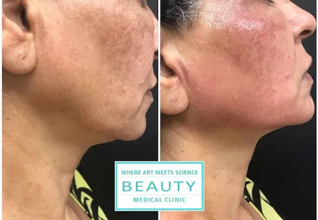
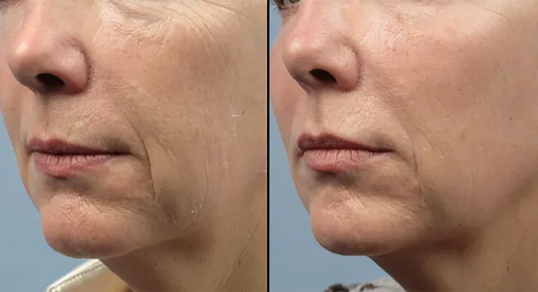

What Forma can do
Instead of turning to fillers or a facelift, Forma combines radio frequency and heat to:
- Tighten the jawline and jowls
- Soften nasolabial folds
- Lift the brow area
- Sculpt cheekbones
- Smooth the forehead and crow’s feet
- Firm the upper and lower eyelids
- Tighten the neck
- Firm arms (“bat wings”) and abdomen
It suits all skin types. Clients say their skin feels smoother and more defined, with fewer wrinkles. RF on its own is best for mild to moderate sagging.
Your treatment plan
Sessions are usually weekly over about six weeks (five to six in total). Mild laxity may need fewer, spaced further apart; your schedule is set after a medical assessment. Slight redness afterwards is common and fades within a few hours.
Forma combines well with facials, injectables and filler. One client’s favourite pairing was a hydro facial with Forma.
Results




Beauty Medical Clinic clients. Individual results vary.
My Forma treatments improved my overall complexion without any pain or downtime. It is a great alternative to expensive procedures. I love the way my new face looks.
Relax and become beautiful. I could see the result after the 2nd treatment.
Forma skin tightening FAQ
Does Forma hurt?
It is essentially painless and needs no downtime. Mild redness fades within a few hours.
How many Forma sessions do I need?
Typically weekly sessions over six weeks. Mild laxity may need fewer, spaced further apart.
Can Forma be combined with other treatments?
Yes, with most facials, injectables and fillers. Victoria will advise on timing.
This page is general information, not medical advice. Your suitability for any treatment is confirmed at a consultation with Victoria Adamov, RN.